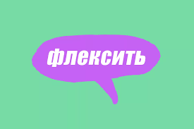
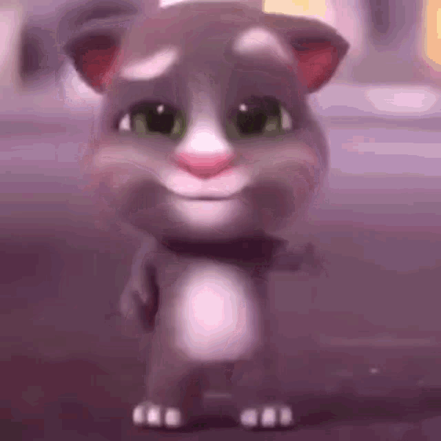

Флексить – значит танцевать и развлекаться: например, в клубе, на дискотеке и любом другом месте, где люди ритмично двигаются под музыку (то есть сгибаются и разгибаются).
Так же пофлексить можно вещами, напрмер новым крутым шмотом или ролексами.
